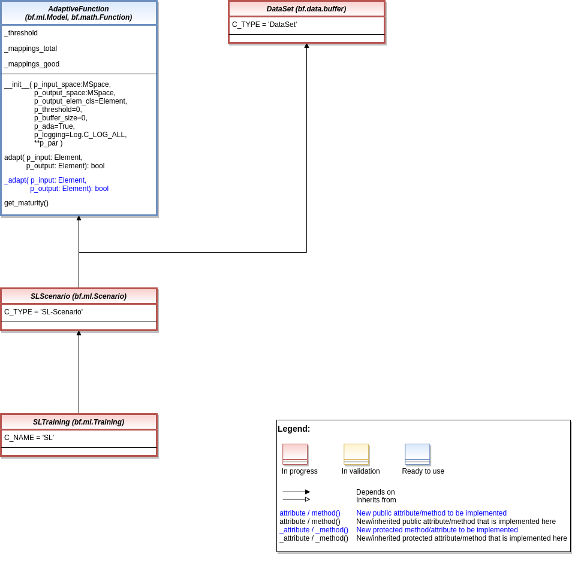

Supervised Learning
Models
Ver. 0.1.1 (2022-08-15)
This module provides model classes for supervised learning tasks.
- class mlpro.sl.models.AdaptiveFunction(p_input_space: mlpro.bf.math.MSpace, p_output_space: mlpro.bf.math.MSpace, p_output_elem_cls=<class 'mlpro.bf.math.Element'>, p_threshold=0, p_buffer_size=0, p_ada=True, p_logging=True, **p_par)
Bases:
mlpro.bf.ml.Model,mlpro.bf.math.FunctionTemplate class for an adaptive bi-multivariate mathematical function that adapts by supervised learning.
- Parameters
p_input_space (MSpace) – Input space of function
p_output_space (MSpace) – Output space of function
p_output_elem_cls – Output element class (compatible to/inherited from class Element)
p_threshold (float) – Threshold for the difference between a setpoint and a computed output. Computed outputs with a difference less than this threshold will be assessed as ‘good’ outputs. Default = 0.
p_buffer_size (int) – Initial size of internal data buffer. Default = 0 (no buffering).
p_ada (bool) – Boolean switch for adaptivity. Default = True.
p_logging – Log level (see constants of class Log). Default: Log.C_LOG_ALL
p_par (Dict) – Further model specific parameters (to be specified in child class).
- C_TYPE = 'Adaptive Function'
- C_NAME = '????'
- adapt(p_input: mlpro.bf.math.Element, p_output: mlpro.bf.math.Element) bool
Adaption by supervised learning.
- get_accuracy()
Returns the accuracy of the adaptive function. The accuracy is defined as the relation between the number of successful mapped inputs and the total number of mappings since the last adaptation.
- class mlpro.sl.models.SLScenario(p_mode=0, p_ada: bool = True, p_cycle_limit=0, p_visualize=True, p_logging=True)
Bases:
mlpro.bf.ml.ScenarioTo be designed.
- C_TYPE = 'SL-Scenario'
- class mlpro.sl.models.SLTraining(**p_kwargs)
Bases:
mlpro.bf.ml.TrainingTo be designed.
- C_NAME = 'SL'